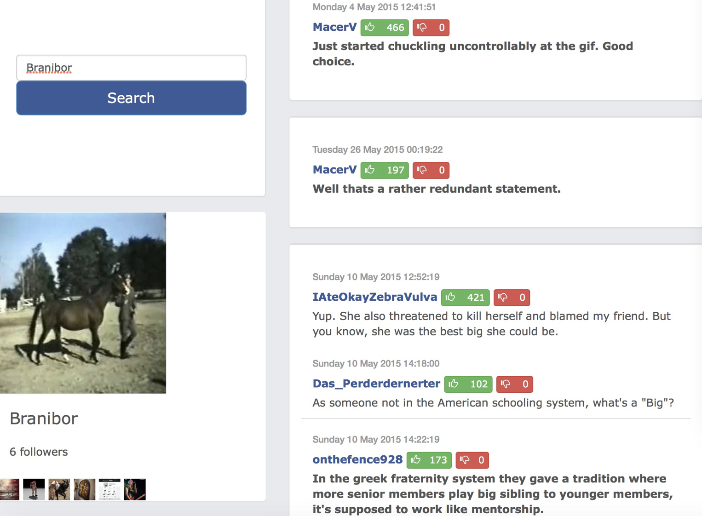

The dummy Reddit

Social Network's have grown in numbers and users. With the proliferation of internet penetration, they are expected to cater to increasing number of users per second. This requires well-designed backend systems which will be able to cater different kinds of user query, store heterogenous data and provide fast performance with low latency. This project aims to understand the backend implementation of Reddit.com, a social networking site which promotes collaboration through discussion threads.
As a part of this project, I implemented the user login process by using AWS RDS (Relation Database System) for hosting a MySQL database to store user id and password. Once the user logged in, their follower data was retrieved from HBase (a column family database). The homepage for a user which contained comment as parent threads along with discussions as child threads was implemented using Mongo DB (a document store database). Finally all these bits and peices were put together as a single backend service to implement Reddit-like social networking application.
Finally a recommendation system was implemented using Collaborative filtering.